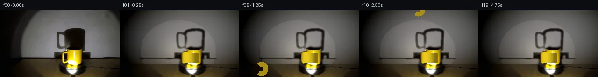

![首帧]()

Round 00
2026-11-05T18:14:45.641156+00:00像素候选变化代码 +467/−0inspection 更新
pixels f72223aad442c78b · code e0346171197b3193
查看本轮 generate.py 真实 diff
--- previous/generate.py +++ current/generate.py @@ -0,0 +1,467 @@ +""" +generate.py — Render 20-frame animation of rotating yellow mug on black platform +with spotlight casting wall shadow. Frame 0 = first_frame.png exactly. +Approach: Scene decomposition into background + spotlight + mug 3D model + shadow projection. +""" + +import numpy as np +from PIL import Image +import os, sys +from pathlib import Path + +# --------------------------------------------------------------------------- +# 1. Load first frame +# --------------------------------------------------------------------------- +case_dir = Path(os.path.dirname(os.path.abspath(__file__))) +first = np.array(Image.open(case_dir / 'first_frame.png')) +assert first.shape == (144, 256, 3) and first.dtype == np.uint8 +H, W = 144, 256 + +# --------------------------------------------------------------------------- +# 2. Extract scene layers via analysis and inpainting +# --------------------------------------------------------------------------- + +def build_scene_layers(arr): + """ + Decompose the scene into: + - base_wall: the grey gradient wall without spotlight or shadows + - spotlight_gain: the additive brightness from the spotlight (per channel) + - mug_mask: binary mask of mug pixels + - shadow_mask: where the spotlight is occluded by the mug + """ + + # ---- Mug mask (yellow pixels) ---- + # Yellow mug: high R, high G, lower B, also darker yellow for shaded mug areas + r, g, b = arr[:,:,0].astype(float), arr[:,:,1].astype(float), arr[:,:,2].astype(float) + + # Primary yellow detection + yellow_mask = (r > 140) & (g > 100) & (r > b + 50) & (g > b + 30) + # Secondary: darker yellow (shaded mug) + dark_yellow = (r > 60) & (g > 40) & (r > b + 20) & (g > b + 10) & (r < 180) + # Mug body area constraints (rows 85-124, cols 130-175) + body_zone = np.zeros((H,W), dtype=bool) + body_zone[85:125, 130:176] = True + + mug_mask = yellow_mask.copy() + # Also include dark yellow pixels that are connected to yellow + mug_mask |= (dark_yellow & body_zone) + + # Clean up: morphological closing + from scipy.ndimage import binary_closing, binary_opening, binary_fill_holes + mug_mask = binary_closing(mug_mask, structure=np.ones((3,3)), iterations=2) + mug_mask = binary_fill_holes(mug_mask) + + # ---- Spotlight region ---- + # The spotlight is a bright radial gradient on the wall + # We need to estimate the spotlight parameters from unoccluded areas + + # Spotlight center estimated from visual analysis + spot_cx, spot_cy = 125, 88 # center of spotlight illumination + yy, xx = np.mgrid[0:H, 0:W] + spot_dist = np.sqrt(((xx - spot_cx)/1.2)**2 + ((yy - spot_cy)/1.0)**2) + spot_radius = 70 + spotlight_mask = spot_dist < spot_radius + + # ---- Shadow mask (within spotlight, not mug) ---- + # The shadow is where the spotlight is dimmed by mug occlusion + # We detect it as darker-than-expected pixels within the spotlight area + + # Estimate the spotlight profile from non-mug, non-shadow pixels + # First, get a rough shadow mask + # Shadow = darker than surrounding spotlight + grey_lum = 0.299*r + 0.587*g + 0.114*b + + # In the spotlight area, find pixels that are significantly darker than neighbors + from scipy.ndimage import uniform_filter + local_lum = uniform_filter(grey_lum, size=15) + shadow_candidate = spotlight_mask & ~mug_mask & (grey_lum < local_lum - 15) & (grey_lum < 100) + + shadow_mask = shadow_candidate.copy() + shadow_mask = binary_closing(shadow_mask, structure=np.ones((3,3)), iterations=1) + + return mug_mask, shadow_mask, spotlight_mask, spot_cx, spot_cy, spot_radius + +# --------------------------------------------------------------------------- +# 3. Build clean background (wall + spotlight, no mug, no shadow) +# --------------------------------------------------------------------------- + … diff truncated; 380 more lines …